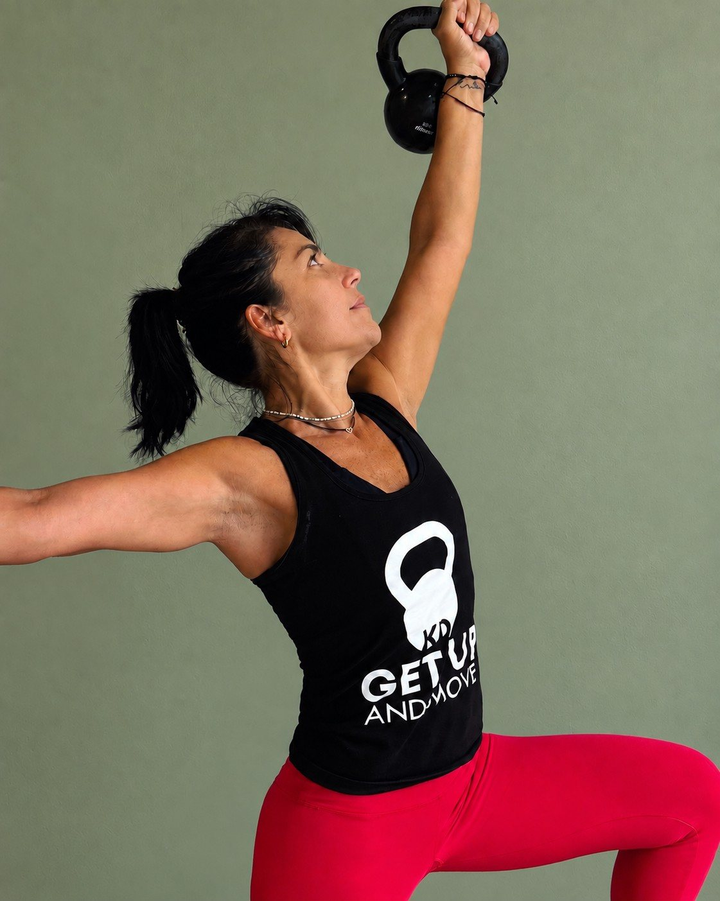
MÉTODO GENX
Muévete y fortalécete con conciencia.
Un método creado por Karla Dellepiane, coach de movimiento, para mujeres que quieren recuperar fuerza y confianza en su cuerpo, sin importar la edad ni la experiencia previa con kettlebells.
Mi historia
No se trata de convertirte en alguien nueva. Se trata de volver a reconocerte.
Después de dos operaciones de columna, una con una fijación de seis tornillos en L4–L5–S1, tuve que aprender a relacionarme de nuevo con mi cuerpo. En los kettlebells encontré no solo fuerza, sino estabilidad, coordinación y confianza. De esa experiencia, mi formación profesional y más de seis años acompañando a alumnas, nació el Método GENX.
Leer la historia completa
Soy Karla Dellepiane, coach de movimiento especializada en kettlebells (pesas rusas), entrenamiento funcional, neurofísica aplicada al movimiento y nutrición deportiva.
Mi camino como entrenadora no comenzó únicamente con el deseo de hacer ejercicio. Comenzó con mi propia necesidad de recuperar la confianza en mi cuerpo. Después de atravesar dos operaciones de columna, quedaron algunas consecuencias en mi lado izquierdo: sentía el pie acartonado y me costaba conectar y estabilizar esa pierna y esa cadera. Mi cuerpo había cambiado y yo necesitaba aprender a relacionarme con él de una manera diferente.
En ese proceso aparecieron los kettlebells. Entrenar con ellos no solo me ayudó a desarrollar fuerza: también me permitió trabajar mi estabilidad, coordinación, atención y confianza. Aprendí a percibir mejor mi cuerpo, comprender sus señales y organizar cada movimiento antes de exigirle más.
Lo que comenzó como parte de mi propio proceso se convirtió en una vocación. Me especialicé durante más de seis años en entrenamiento con kettlebells y complementé mi formación con entrenamiento funcional, TRX, mace y mazo, nutrición deportiva y neurofísica aplicada al movimiento. De esa experiencia nació el Método GENX, creado por mí bajo la identidad de Get Up & Move.
GENX reconoce que cada cuerpo tiene una historia. Por eso no saltamos procesos ni confundimos rapidez con progreso. Primero aprendemos a percibir, después a conectar y organizar; desde allí podemos integrar y transformar.
Karla Dellepiane
Creadora del Método GENX / Get Up & Move
Muévete y fortalécete con conciencia.
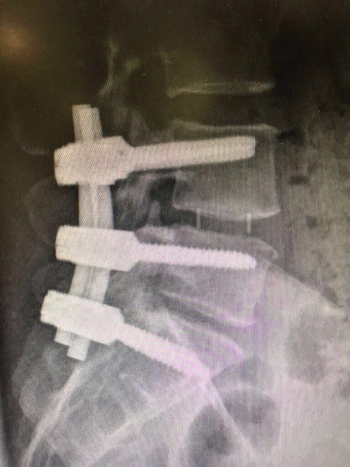
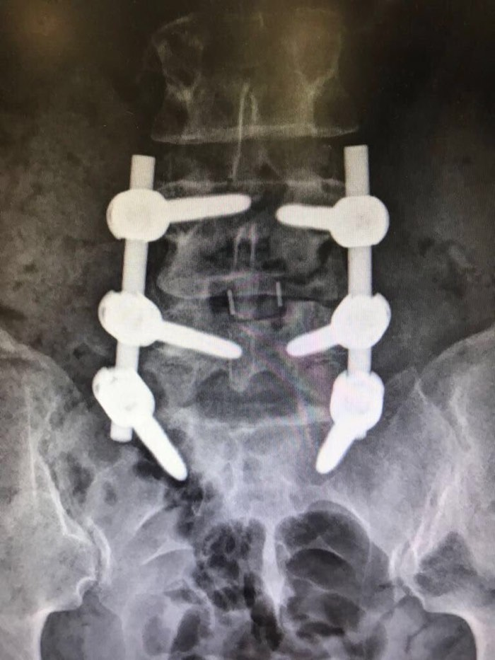
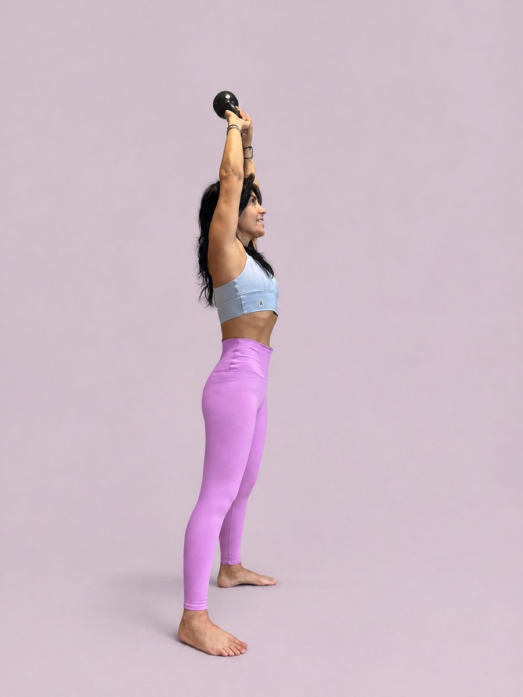
Por qué GENX
Aprende a escuchar tu cuerpo.
Conecta tu respiración con el movimiento.
Integra fuerza, movilidad y estabilidad.
Transforma lo aprendido en autonomía.
Entrenamientos seguros para la espalda y las articulaciones
Cada progresión está diseñada considerando lesiones previas, cirugías y limitaciones reales. No es fitness genérico.
Progresiones para principiantes absolutas
Si nunca has tocado un kettlebell, empiezas por la técnica y el peso adecuado para ti, sin apuro.
Sesiones de 20 a 30 minutos
Sesiones cortas, pensadas para sostenerse en el tiempo sin ocupar toda tu agenda.
Estabilidad y movilidad primero
La intensidad llega después de que tu cuerpo esté listo para sostenerla.
Seguimiento que se adapta a ti
Tu plan se ajusta según cómo te sientes, no según una tabla genérica.
Nutrición para acompañar, no para restringir
Un enfoque realista, sin dietas extremas ni promesas mágicas.
Guiado en video, paso a paso
Cada ejercicio explicado con técnica clara, para entrenar con seguridad.
Una comunidad que empieza como tú
Mujeres de distintas edades que también están reconstruyendo su fuerza.
El proceso
El Método GENX no salta procesos.
El Método GENX se desarrolla a través de cinco etapas que conectan el movimiento con nuestra manera de afrontar la vida.
-
01
Percibir
Escuchar tu cuerpo y reconocer cómo llegas: qué sientes, cómo respiras y dónde encuentras tensión o seguridad. Es darte un momento para observar antes de actuar.
-
02
Conectar
Vincular tu atención con la respiración, los apoyos y el movimiento. Estar presente en lo que haces y reconocer lo que necesitas.
-
03
Organizar
Ajustar tu postura, distribuir el esfuerzo y encontrar una respuesta adecuada al desafío. Aprender a sostener una carga también implica saber cuándo cambiar de estrategia.
-
04
Integrar
Combinar fuerza, movilidad, estabilidad, equilibrio y coordinación. Permitir que las capacidades que entrenas trabajen juntas y te acompañen en tu vida cotidiana.
-
05
Transformar
Convertir lo aprendido en mayor autonomía: moverte con más seguridad, tomar decisiones conscientes y sostener hábitos que te ayuden a crecer.
Estas cinco etapas se vuelven a recorrer ante cada nuevo desafío. Cada experiencia nos ofrece otra oportunidad para percibir, conectar, organizar, integrar y transformar.
Programas
Un nivel para cada punto de partida.
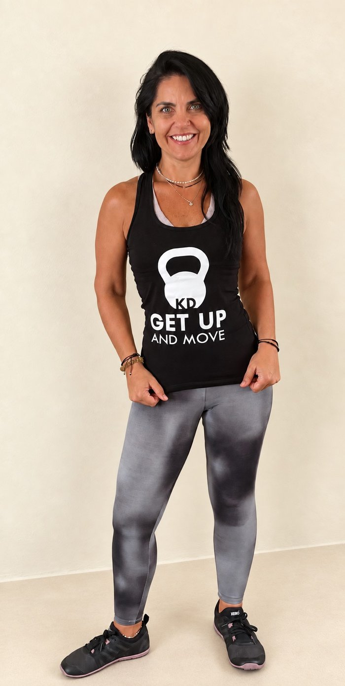
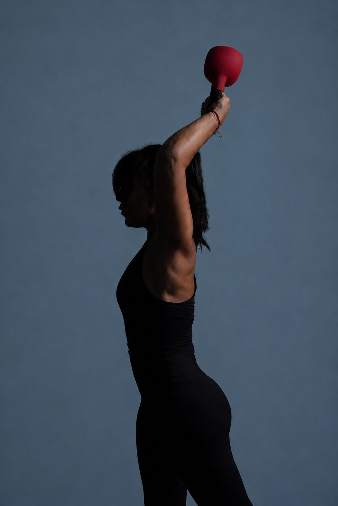
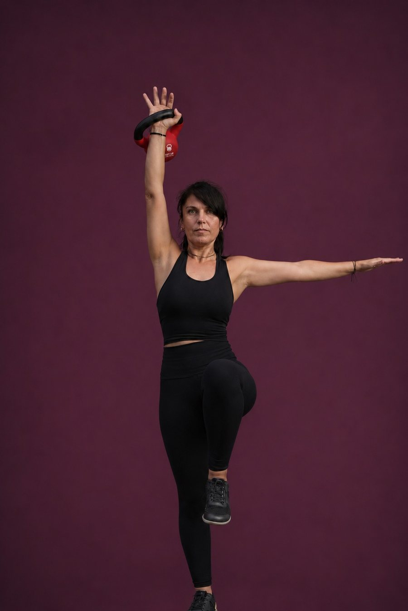
- Primeros pasos con el kettlebell
- Foco en percibir y conectar
- Pesos livianos, técnica ante todo
- Organización del movimiento completo
- Progresión de cargas guiada
- Circuitos de fuerza y resistencia
- Integración: fuerza y potencia real
- Series complejas y mayor volumen
- Objetivos de rendimiento personalizados
Historias que mueven
Así se ve la fuerza, en la vida real.
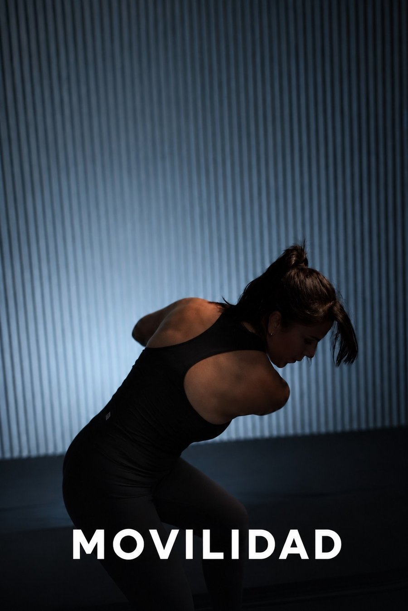
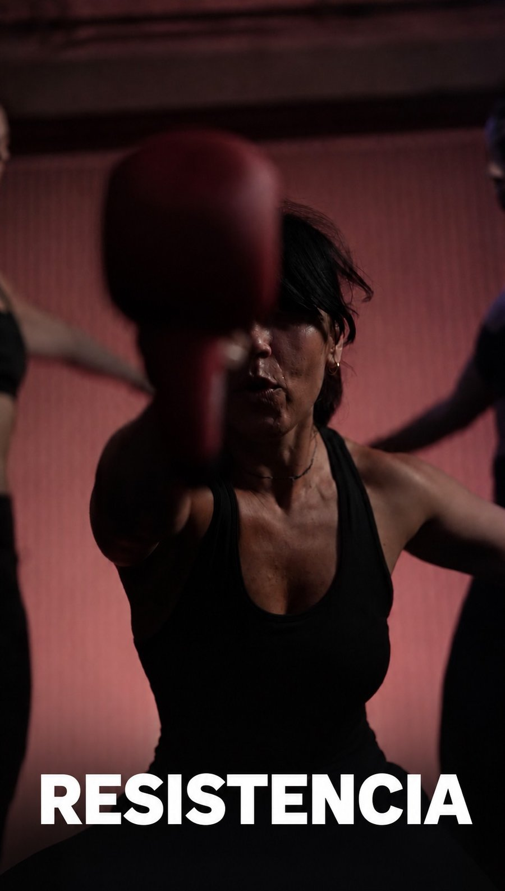
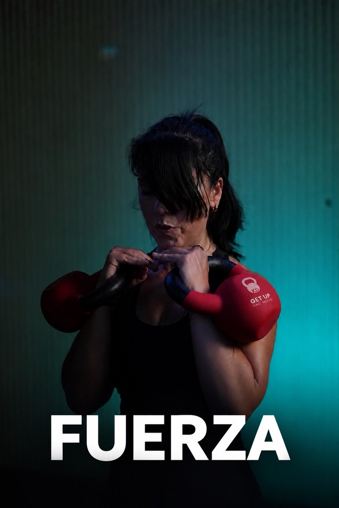
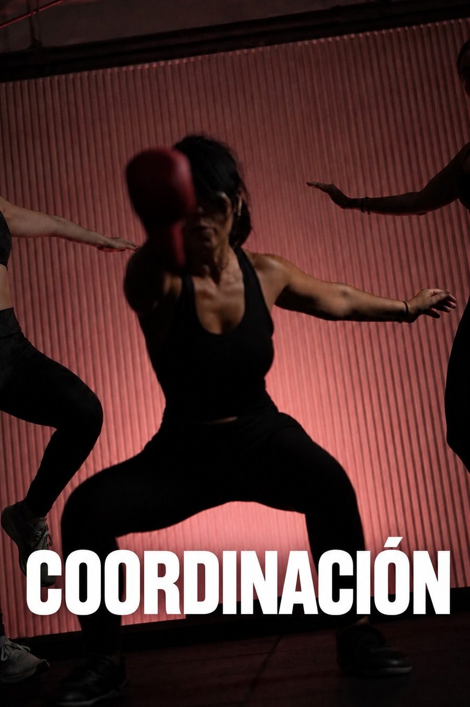
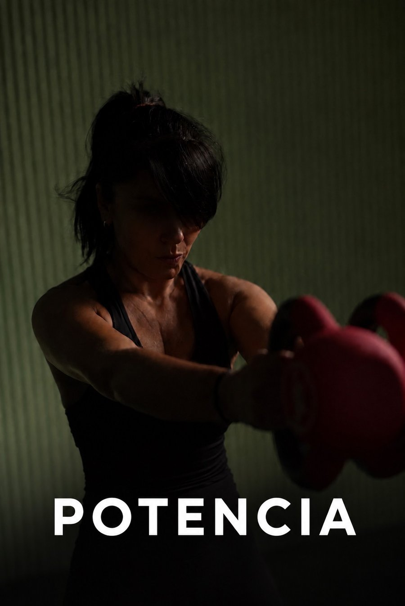
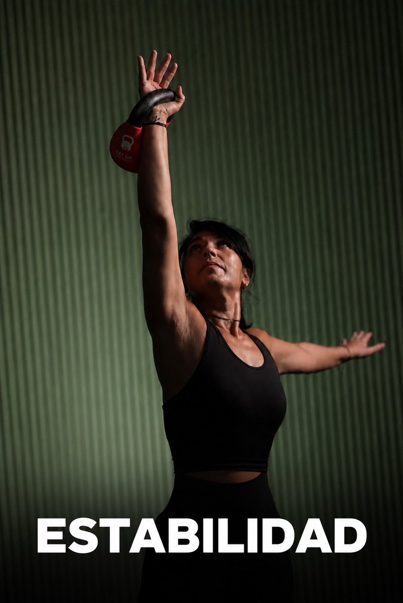
Historias reales
Lo que dicen quienes ya empezaron.
Próximamente
Nivel Inicio
Próximamente
Nivel Intermedio
Próximamente
Nivel Avanzado
Preguntas frecuentes
Antes de empezar
¿Necesito experiencia previa con kettlebells?
No. El nivel Inicio está pensado para quien nunca entrenó con pesas rusas. Empiezas por la técnica y el peso adecuado para ti.
¿Es seguro si tengo antecedentes de lesiones de espalda?
El método nació de una recuperación real y prioriza la seguridad articular en cada progresión. Aun así, no reemplaza la indicación de tu médico o kinesiólogo: consulta antes de empezar si tienes una condición activa.
¿Cuánto dura cada sesión?
Entre 20 y 30 minutos, pensadas para sostenerse en el tiempo sin ocupar toda tu agenda.
¿Necesito comprar un kettlebell especial?
Alcanza con un kettlebell del peso indicado según tu nivel; en la app te decimos exactamente cuál conseguir antes de empezar.
¿Puedo cancelar cuando quiera?
Sí, la suscripción se cancela cuando quieras desde tu cuenta, sin permanencia mínima.
Empieza hoy